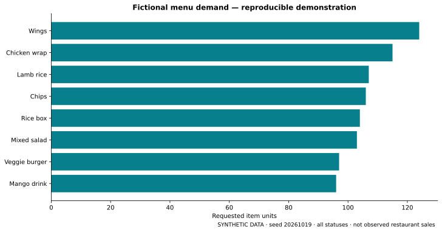

GA-RA-07 / SQL, BI & operational measurement
UK Asia Grill — Restaurant Revenue & Operations Analytics
Turn operational records into defensible metrics. Start by asking what the data actually proves.
The business question
A restaurant ordering system records baskets, payment states, fulfilment transitions and notification events. How can reporting distinguish requested demand from collected money, and genuine operational delay from incomplete measurement?
I extended the operational application with a separate read-only SQL analytics project. The emphasis is not an attractive revenue number: it is a metric contract that can withstand questions about payment provenance, joins, missing timestamps and small samples.
Technical architecture
PostgreSQL order and notification records. Guarded SELECT-only transformations, with explicit data-quality flags.
Order, menu-line, notification and basket-pair facts. One-way date/product relationships and denominator-aware DAX.
Four interactive report pages, reproducible synthetic imports and evidence-qualified stakeholder recommendations.
SQL techniques
CTEs, FILTER/CASE aggregation, JSONB lateral expansion with ordinality, bounded numeric parsing, distinct basket self-joins, DENSE_RANK, LAG, cumulative windows, zero-filled date series and PERCENTILE_CONT. Order totals are calculated at the order grain before any menu or event expansion.
Calendar dates use Europe/London; durations subtract timezone-aware UTC instants. Adversarial PostgreSQL fixtures cover malformed JSON, invalid line values, repeated products, notification fanout and the repeated hour when British Summer Time ends.
Data model
| Table | Grain | Filtering contract |
|---|---|---|
| Orders | One recorded order | Date, type and status intersect |
| MenuItems | One stored basket element | Orders and Products → lines |
| Notifications | Aggregated per order | Orders → notification facts |
| ItemPairs | Distinct unordered pair per order | Orders → pair facts |
| Date / Products | Calendar day / normalized product | Single-direction relationships |
No customer dimension, personal fields, live payment identifiers, notes or notification endpoints are required. Name-derived products are a pragmatic substitute for a missing stable SKU, with explicit limitations for variants and renames.
The report
- Executive overview: recorded orders, gross value, application-paid card value, cancellation/failure rates and daily/monthly trends.
- Menu & customer demand: units, dense popularity ranks, item combinations, peak hours and product demand over time. No profitability claim.
- Kitchen operations: median/P90 duration, coverage, outliers, acknowledgement and notification retries. Anomalous records remain visible.
- Payments & data quality: payment decomposition, missing transitions, inconsistent states and fee-model reconciliation.

Key analytical findings
Private-source validation showed why metric definitions matter: operational confirmation cannot stand in for cash collection; a small number of anomalous timestamps can dominate a preparation-time mean; and a terminal notification state does not establish delivery or acknowledgement coverage. A pricing adjustment also needs an explicit analytical contract rather than a naive subtotal comparison.
These are measurement findings, not proof of commercial impact. The independently generated dashboard lets reviewers inspect the calculations and failure modes without disclosing the underlying business records.
Recommendations
- Reconcile payment provenance first. Separate live/test transactions, application-paid card amounts, offline collection and settlement. Monitor reconciliation coverage before calling a metric revenue.
- Improve lifecycle measurement. Review invalid sequences and extreme durations. Monitor coverage, median, P90 and anomaly counts together before altering kitchen processes.
- Measure notification eligibility and coverage. Separate current event outcomes, retries, missing eligible events and staff acknowledgement. Do not infer printer reliability from absent jobs.
- Validate demand hypotheses. Use a longer live-only period to test menu and peak-hour patterns. Ingredient costs, causal uplift and staffing ROI are not established.
Power BI authoring status
PostgreSQL import queries, model specification, date dimension, DAX measures, formatting guidance and a four-page build blueprint are authored. Windows Power BI Desktop and an Analysis Services engine were unavailable, so Desktop import, DAX engine execution and native Power BI visual acceptance remain outstanding. No tested PBIX/PBIP is claimed.
Reproduce & inspect
Download the fictional CSVs below for Power BI Import mode. Use Orders as the parent of line, notification and pair facts; derive Products from normalized product keys and create a marked Date table. Use single-direction relationships, fixed-decimal GBP values and null duration handling.
All public inputs are fictional and repeatable. No measured uplift, savings, profit margin or causal effect is claimed. The private application source has not been made public.